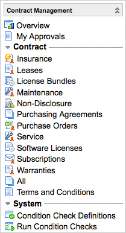

Contract Management
| |
Note: This article applies to Fuji. For more current information, see Contract Management at http://docs.servicenow.com
The ServiceNow Wiki is no longer being updated. Please refer to http://docs.servicenow.com for the latest product documentation. |
Contents
1 Overview
A contract is a binding agreement between two parties. In ServiceNow, contracts contain detailed information such as contract number, start and end dates, active status, terms and conditions statements, documents, renewal information, and financial terms. Manage and track contracts with the Contract Management application in ServiceNow.
Contract Management is active by default. If the Cost Management plugin has been activated, Contract Management integrates with Cost Management to associate contracts with costs and determine the total cost of ownership. Track recurring expenses related to contracts with rate cards and expense lines.
Note the following:
- To use expense lines in Contract Management, you must activate the Cost Management plugin.
- To use terms and conditions in Contract Management, you must activate the Managed Documents plugin.
- To associate contracts with work orders, you must activate the Work Management plugin.
| |
Note: References to Work Management indicate that the information on this page is valid for ServiceNow versions prior to Fuji. In the Fuji release, Work Management was renamed Field Service Management. |
2 Menus and Modules
The following modules are included with contract management:
|  |
|
{kind=link}
2.1 Deprecated Contract Options
The License Bundles and Software License Contracts modules are deprecated. If you are using the Software Asset Management plugin, use the Software Licenses option, not License Bundles or Software License Contracts.
| Contract Option | Plugin Installed With |
|---|---|
| License Bundle | Software Asset Management Extensions |
| Software License Contracts | Software License Management |
| Software Licenses | Software Asset Management |
3 Enhancements
3.1 Dublin
- Two new contract models are available:
- Purchasing Agreements: Track purchasing agreements with vendors using this new module. New fields for this contract model are added:
- Commitment: Displays the total amount of money the agreement requires be spent with this vendor.
- Discount: Displays a discount percentage, if applicable.
- NDA: Track non-disclosure agreements with vendors in the new Non-Disclosure module.
- Purchasing Agreements: Track purchasing agreements with vendors using this new module. New fields for this contract model are added:
- The contract rate card end date is automatically set to the contract end date if no value is entered.
- Expense lines are only generated from contracts with the Active or Expired state.
- When you create a new contract using either the Insert or Insert and Stay option, the new contract record state is set to Draft and the substate is set to Awaiting Review. Terms and conditions are not duplicated.
- When Service Portfolio Management is activated, new related lists are available on the Contract form: Service Offerings and Service Commitments.
3.2 Calgary
- A new Subscriptions contract type is available. The Subscription module is added to the application navigator.
- Contracts can now be extended and renewed. This improves efficiency by retaining contract information and history.
- Contracts can now use rate cards and expense lines (if the Cost Management plugin has been activated) to provide detailed price information for the contract and generate recurring expenses automatically.
- Contracts can now have terms and conditions. This keeps all documentation relevant to a contract within the contract record. When terms and conditions text changes, a log is maintained for auditing purposes.
- Contract history is now maintained showing different versions of a contract and creating an audit trail.
- Purchase order information is managed in the new Procurement application.